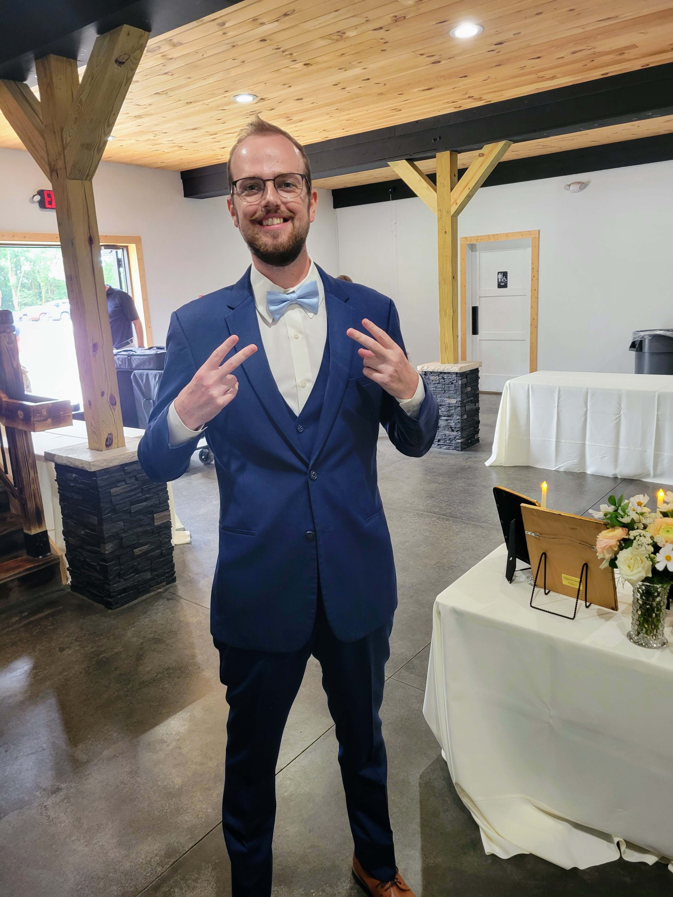
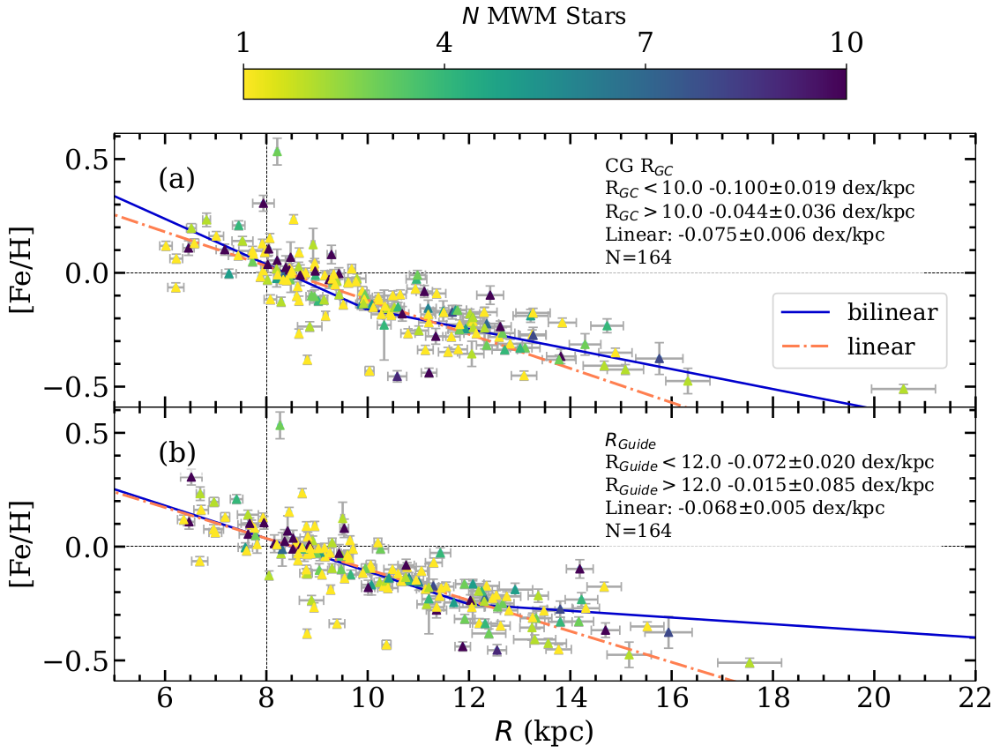
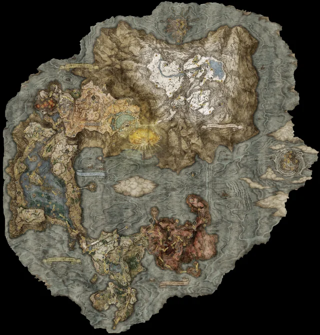

Hello!
My name is Jonah Otto and I am a 5th year PhD student at Texas Christian University.
I am an observational astronomer broadly interested in Galactic Archaeology, the study of how our Galaxy, the Milky Way formed and evolved over time. I have used data from SDSS-V to spectroscopically confirm open cluster membership, and constrain the radial metallicity gradient in the Milky Way, (Figure from Otto+2026 below).

I have also worked to add nearly 100 new young open clusters to this sample, in order to better investigate the age trends present in the Milky Way. Check out all my papers and preprints on ADS!
My journey to TCU started at Earlham College just across the Indiana border from my home state of Ohio. A summer reasearch experience working with Dr. Seth Hopper on modeling how small particles interacting with black holes might look in LIGO data, confirmed that astronomy research was something I wanted to pursue. From there I recieved an MS degree from California State University Los Angeles, working with UC Merced professor, Dr. Sarah Loebman on the utility of machine learning to select open clusters in mock HST observations of FIRE galaxies, before starting at TCU in the fall of 2022.
In my spare time I enjoy following a variety of Ohio sports teams, reading books (primarily science fiction), and playing video games. I have also taken up jogging as I approach my 30s and realized I should be more active, though I'm not sure I enjoy that yet.
